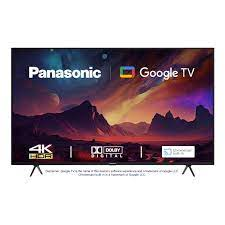

Television became available in crude experimental forms in the late 1920s, but only after several years of further development was the new technology marketed to consumers. After World War II, an improved form of black-and-white television broadcasting became popular in the United Kingdom and the United States, and television sets became commonplace in homes, businesses, and institutions. During the 1950s, television was the primary medium for influencing public opinion.[1] In the mid-1960s, color broadcasting was introduced in the U.S. and most other developed countries. The availability of various types of archival storage media such as Betamax and VHS tapes, LaserDiscs, high-capacity hard disk drives, CDs, DVDs, flash drives, high-definition HD DVDs and Blu-ray Discs, and cloud digital video recorders has enabled viewers to watch pre-recorded material—such as movies—at home on their own time schedule. For many reasons, especially the convenience of remote retrieval, the storage of television and video programming now also occurs on the cloud (such as the video-on-demand service by Netflix). At the end of the first decade of the 2000s, digital television transmissions greatly increased in popularity. Another development was the move from standard-definition television (SDTV) (576i, with 576 interlaced lines of resolution and 480i) to high-definition television (HDTV), which provides a resolution that is substantially higher. HDTV may be transmitted in different formats: 1080p, 1080i and 720p. Since 2010, with the invention of smart television, Internet television has increased the availability of television programs and movies via the Internet through streaming video services such as Netflix, Amazon Prime Video, iPlayer and Hulu. In 2013, 79% of the world's households owned a television set.[2] The replacement of earlier cathode-ray tube (CRT) screen displays with compact, energy-efficient, flat-panel alternative technologies such as LCDs (both fluorescent-backlit and LED), OLED displays, and plasma displays was a hardware revolution that began with computer monitors in the late 1990s. Most television sets sold in the 2000s were flat-panel, mainly LEDs. Major manufacturers announced the discontinuation of CRT, Digital Light Processing (DLP), plasma, and even fluorescent-backlit LCDs by the mid-2010s.[3][4] In the near future, LEDs are expected to be gradually replaced by OLEDs.[5] Also, major manufacturers have announced that they will increasingly produce smart TVs in the mid-2010s.[6][7][8] Smart TVs with integrated Internet and Web 2.0 functions became the dominant form of television by the late 2010s.
Samsung link Sony link Panasonic link Xiaomi link